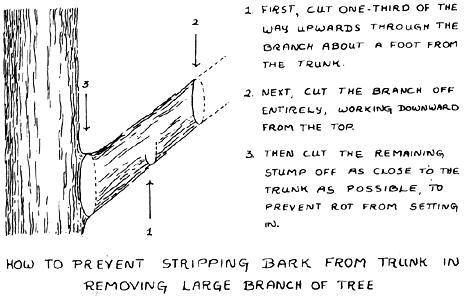

There are over a thousand apple varieties, which gives you plenty to choose from. A few well-tested varieties, such as Gravenstein, Golden Delicious, Grimes, Rome Beauty, and Yellow Transparent, should be the basic stock of your orchard, but try some of the lesser-known ones as well. Apple trees tend to bring surprises, and a well-cared-for minor variety may give you the most wonderful fruit.
Apples will grow almost anywhere in the United States except in the hottest regions. They need the cool-to-cold winters during dormancy. Your local nursery will no doubt give you an indication of not only the feasibility of growing apples, but the best varieties for that area as well.
Apple trees, except for the dwarfs, which bear small crops in their second or third year, usually won't give you any apples until their fifth to sixth year. But by the tenth year they're at peak production, yielding five to ten bushels per tree per year. And they will keep bearing for thirty years or more. So order two varieties at the very least. Not just because thirty or forty bushels of one kind might become a bit boring, but because some are eating apples and some for cooking. Also cross-fertilization will increase your crop. Stock usually comes in one-, two-, or three-year-olds. You'll find the older ones more expensive, of course. On the other hand, being transplants, they are usually sturdier trees. Bought from a good nursery, two- to three-year-olds are your best bet.
If you buy two- or three-year-old transplants, they should need no pruning the first two years besides the initial one on planting to eliminate injured roots and take the wood down a bit proportionately.
After the first two years, your primary pruning job will be to make the tree easy to pick from and somewhat squat in shape. The center of the tree must be kept open . . . don't let the growth get too dense. Cut off branches that cross and rub against each other in the wind. Any branch so large it can't be pruned off with shears, should be cut in three stages with a saw, as shown in the diagram.
As the tree grows older, you will notice small, short cluster branches of buds developing along the real branches. These must not be cut off . . . they're the bearing spurs that will give you your fruit.
The spurs will bear lovely flowers . . . in fact, too many of them. If you walk through your orchard one day during blossom time and notice a host of pink and white petals falling, don't faint. It's quite natural. The tree would otherwise bear far too much fruit for it to carry and these dropping flowers are its natural way of cutting back the crop. Even so, once the fruit sets, you will probably have to tree-cull some of it. Don't let the young apples crowd each other. Not only can their weight break the branch, but too many apples spoil the crop.
Preventative care and healthy, well-nourished trees will minimize problems. However, there are some regions of the country in which cedar rust, scab, or fire blight readily attack apple trees. In these areas resistant varieties are grown. By taking the simple precaution of finding out from your county agent what the pests in your region are and selecting the appropriate resistant species, a lot of disappointment will be avoided.
The second problem-solving rule is, if it looks unhealthy, get rid of it. Branches with mildew or an area of prematurely yellow, withered leaves should be pruned out, and fallen spoiled apples or infected fruit removed. Don't leave sickly cuttings in the neighborhood of your trees. All diseased branches should be burned in a hot fire a good distance from your orchard.
The first week in June hang a trap on each of your trees for bugs. Use a wide-mouthed jar covered with a coarse wire mesh with holes just small enough not to admit bees. Fill it half full with a solution of one part molasses to ten parts water. A bit of yeast helps things along. Hang the jar on the southern side of the trunk. This will attract all sorts of nonsense. You'll even end up with a couple of persistent young honeybees in the wrong pot. It will also, however, eliminate most of the apple flies, whose maggots have an annoying habit of tunneling into your apples. Keep the traps up for the rest of the bearing season.
On the other hand, if the answer (Finding half a worm.) to "What's worse than biting into an apple and finding a worm?" doesn't bother you, the bug trap may not be necessary at all. The easiest solution, of course, is to share the apples with your livestock . . . they get the culled wormy ones.
Pick apples sun-ripe, naturally. Hold the apple in your hand thumb against the stem, and with a light upward and sideways motion, twist it off. Be careful not to injure the spur on which the apple grew, since it will bear again next year. Also, don't twist the stem out of an apple you want to store . . . this would break open the skin to decay-causing bacteria.
You can't store summer apples, only fall and winter ones. However, there's no need to get a bellyache harvesting them. The cooking varieties make great applesauce and apple butter to raid the pantry shelves for later.
|
 |
|
|